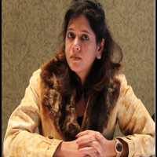

Dr. Reema Chowdhary
Digital Humanities · Adaptation · Cultural Heritage · Publishing · South Asia
Profile
Humanities scholar working at the intersection of South Asian cinema, adaptation studies, publishing studies, and the digitisation of cultural heritage — especially Sindhi literary archives and oral heritage in India.
Appointments
Centre Administrator — JPN National Centre of Excellence in the Humanities, IIT Indore
Present.
Postdoctoral Fellow (Digital Humanities) — Jayaprakash Narayan Centre of Excellence in the Humanities, IIT Indore
2023 – August 2025.
Assistant Professor (Communication) — NMIMS, Indore
2019 – 2023.
Academic Associate (General Management–Communication) — IIM Indore
2011 – 2013.
Coordinator, English Language Lab — School of Computer Science & IT, DAVV
2009 – 2011. Visiting faculty at SCSIT (2009–2012), IET DAVV (2009–2011), Shri Vaishnav Institute of Management, School of Commerce, and School of Pharmacy (2009–2010).
Full-time faculty — Medi-Caps Institute of Technology, Indore
2006.
Education
Ph.D., English and Film Studies, IIT Indore (2019), supervised by Dr. Nirmala Menon. Study of Visual Narratives: Mapping the Postcolonial Indian Biopics as Historical Palimpsest.
M.Phil., English Literature, Vinayaka Mission University, Salem (2009).
M.A., English Literature, Vikram University, Ujjain (2007).
M.C.M., Master of Computer Management, Devi Ahilya Vishwavidyalaya, Indore (2002).
B.Sc., Pharmaceutical Chemistry, Devi Ahilya Vishwavidyalaya, Indore (2000).
Fellowship
2017 — British Council Charles Wallace India Trust Fellowship. Visiting Research Fellow, Nottingham Trent University, UK.
Research interests
Digital humanities; adaptation studies; cultural heritage; publishing studies; South Asian studies; postcolonial Indian biopics; Sindhi libraries and folklore; Naga oral heritage.
Book
Indian Biopics as Historical Palimpsest — under publication with Routledge India.
Editorial work
Associate Editor, Digital Humanities Intersections. Reviewer, Journal of Cultural Analytics. Website administration: jpnnationalcentre.com.
Research projects
- Co-PI, Sindhi Sanchaya: a comprehensive and interactive database of a partitioned literature. Completed. sindhisanchaya.in
- Co-PI, Developing an Alternative Access to Cultural Heritage: A Digital Archive of Naga Oral Heritage. Ongoing.
- Co-PI, Building a Digital Library of Sindhi Folklore. Ongoing.
Consultancy
2021 — Competency mapping using the PCMM framework, Hotel Daksh Residency, Indore. Corporate communication, HR policy, and training-need identification for A-One Products.
Selected publications
- Wadhwa, S., & Chowdhary, R. (2026). Archiving frictions: Sindhi libraries and the struggle for belonging in India. Archival Science 26, 5. DOI: 10.1007/s10502-025-09525-6.
- Chowdhary, R. (2024). Shifting paradigms of multilingual publishing and scholarship in India. The Journal of Electronic Publishing 27(1). DOI: 10.3998/jep.5592.
- Wadhwa, S., & Chowdhary, R. (2024). Digital technology for literature revitalization: A framework for Sindhi libraries in India. Preservation, Digital Technology & Culture 53(4). DOI: 10.1515/pdtc-2024-0030.
- Chowdhary, R., & Rajpurohit, N. (2023). A transformer-based sentiment analysis of cultural heritage sites. In Emerging Digitalisation Trends in Business and Management. AAP / CRC Press.
- Chowdhary, R., Arora, S., & Menon, N. (2019). Designing a visual palimpsest through film: Jodhaa Akbar and the nationalist narrative. South Asian Popular Culture 16(2–3).
- Chowdhary, R., Longkumer, I. W., & Menon, N. (2018). Resurrecting gender roles: An interview with Sampat Pal Devi. Re-Markings 17(1).
- Chowdhary, R., & Menon, N. (2018). Biopic as a visual palimpsest: Mapping social hegemonies in Bandit Queen. Quarterly Review of Film and Video 35(8).
- Menon, N., & Chowdhary, R. (2016). Muslim identity and representation in Deepa Mehta’s Earth and Abhishek Kapoor’s Kai Po Che. Postcolonial Text 11(2).
- Chowdhary, R. (2016). Narratives of cosmopolitanism and hybridity. Review. Postcolonial Studies. DOI: 10.1080/13688790.2016.1232144.
- Sukhija, R. (2012). Multiculturalism as an element in business communication. International Journal of Multidisciplinary Educational Research 1(2).
- Sukhija, R. (2012). Thematic issues in James Joyce’s novels, with special reference to Ulysses. Research Journal of Humanities and Social Sciences 3(3).
- Sukhija, R. (2012). Computer-assisted language learning in English teaching. Research Journal of Humanities and Social Sciences 3(4).
Invited talks
- Invited speaker, Workshop on Research Methodologies in Interdisciplinary Humanities, 25–26 August 2025, IIT Indore.
- Invited expert, Mapping Digital Humanities Practices in/on India, Jamia Millia Islamia and IIT Indore, 16–18 October 2020.
- Plenary and session chair, Confronting the ‘Global’, Exploring the ‘Local’, Jamia Millia Islamia with Michigan State University, 21–22 December 2020.